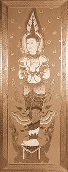

If the Western meditator (with more than a hint of conceit) occasionally looks down on non- meditating fellow Buddhists and fancies himself in his attempts to meditate as the truer disciple of the Buddha, then such an attitude finds little justification in the scriptures. It is true that according to the Buddha's Teaching elsewhere, the ultimate happiness of Nibbana can only be found through introspection. In many of his discourses the Accomplished One leaves no doubt as to how highly he holds the practice of meditation. But human motivations are mysterious stuff and our motivations for Dhamma-practice are no exception. The moral philosopher Spinoza once remarked that although all human beings wish for freedom, only few wish for what actually leads to freedom. For a religion in which freedom and the highest happiness coincide, this may be read with a small twist: that although all human beings wish for happiness, only few wish for what leads to true happiness. Who really just wants what leads to 'the highest happiness' of Nibbana? Is it not the small and often slow steps of 'disendarkenment' which in truth motivate us, equally if not more than the final, by definition unfathomable, goal of enlightenment? If so, then the distinction between 'meditation for liberation' and 'generosity for future happiness' doesn't hold any longer: whoever practises meditation and expects of insight and tranquillity, not just the realisation of Nibbana, but also some elucidation of his or her existence now, is doing - in the light of the teaching on the three grounds for meritorious action - nothing different from the person who practises generosity and hopes for future happiness by virtue of his or her meritorious deeds. The scriptures explain that both acquire punna - one in the field of giving, the other in that of mind-cultivation - and both can be certain of the good fruits of their actions. It is not for the mountain to belittle the valley; both belong as obviously together as they are different. The one great Path beneath our feet can appear misleadingly diverse.
According to the commentarial tradition, the three bases of wholesome action, generosity, ethical conduct, and meditation, are joined by seven others that occur scattered in the older texts: reverence apaciti; service veyyavaca; sharing of merit pattanuppadana; rejoicing in the merit of others abbhanumodana; explaining the Teaching dhammadesana; listening to the Teaching dhammasavana ; and rectifying one's views ditthujukamma . All ten are grounds for wholesome action and, if cultivated, reduce our susceptibility for future suffering.
How, practically, does such meritorious action affect our lives? For an answer to this question we have to look at the broader context of kamma (action) and vipaka (fruit) to bring the function of punna into a clearer focus. A short passage in the Samyutta Nikaya (S ii 822) describes in plain terms how meritorious and demeritorious activity impregnate our consciousness. On the one hand, all punna acquired in the ten spheres of wholesome action is directly conducive to our well-being and can be looked at as a source of future happiness. On the other hand, punna is the wholesome result of good action and purifies the mind. The commentator Dhammapala interprets the term (in a more edifying than strictly etymological passage) as coming from the root of the verb 'to clean': 'it cleanses the continuation of life'. Punna may be thus understood as something that cleanses the mind of unwholesome akusala habits and their results. It mitigates and 'dilutes' the effect of previous unwholesome actions and ameliorates their vipaka or, at best, neutralises it entirely. In one Sutta of the Gradual Sayings (A i 2491), where the Buddha explains that the same action for different people can bring about kammic results of differing intensity, he uses the following simile: A person of little virtue and understanding who commits an unwholesome action resembles a small vessel of water to which a lump of salt is added. The water in the small vessel instantaneously turns salty and becomes undrinkable. The person of many virtues who performs the same unwholesome action resembles the Ganges: even a sizeable lump of salt will fail to turn the great river salty or render it undrinkable. The effect of punna remains the same whether the 'salt' of our unwholesome actions is diluted afterwards or whether the 'waters' of accumulated virtue are abundant enough to neutralise the salt to begin with. The simile throws some light on the relationship between the performance of good actions and the morality of our general conduct. It is obvious that such punna improves our well-being much more dramatically if it is not constantly bound up with neutralising the kammic fallout of unskilful living.
|
 |
 Who We Really Are; Ajahn Sumedo
Who We Really Are; Ajahn Sumedo